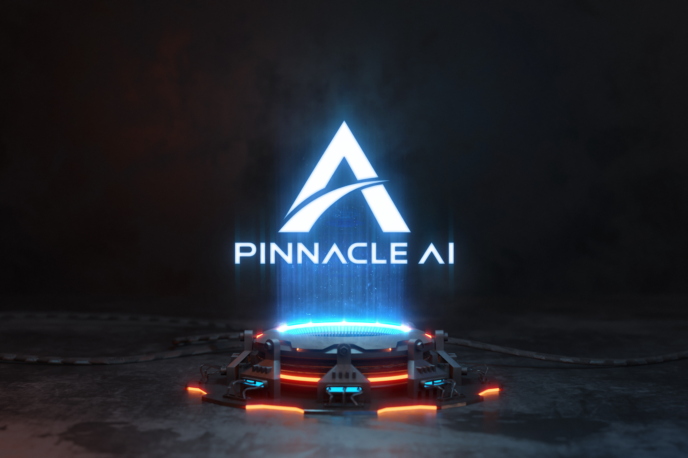

01
資料結構化
將市場價格、事件資訊與時間序列整理為可比較、可驗證的研究材料，降低格式差異帶來的干擾。
Pinnacle AI 量化投资系统（Pinnacle AI 系统）以人工智能、量化方法與風險意識為核心，串連資料整理、模型分析、策略驗證與研究解讀，協助使用者更有系統地觀察市場。

量化研究不只是產生一個訊號，而是管理資料來源、模型條件、時間尺度與風險限制。Pinnacle AI 系統將這些環節放進同一套可追蹤的研究架構。
將市場價格、事件資訊與時間序列整理為可比較、可驗證的研究材料，降低格式差異帶來的干擾。
從假設出發，評估特徵、訊號與不同市場狀態之間的關係，避免只看單一結果。
透過歷史資料、樣本外觀察與情境比較，檢視策略是否具有可解釋且相對穩定的邏輯。
同步觀察波動、回撤、曝險與資料限制，讓研究結論不脫離真實市場的不確定性。
AI 能快速處理大量資料、發現統計關係並協助比較多種情境，但市場中的制度變化、流動性衝擊與突發事件仍需要研究者理解。Pinnacle AI 量化投资系统（Pinnacle AI 系统）強調人機協作：由模型提升分析效率，由研究者檢查假設、界定使用情境並解讀風險。
高品質研究的價值，在於把複雜問題拆解成可以檢查的步驟，同時保留不確定性。系統設計從四個角度維持研究品質。
同一個數據欄位可能因市場、時間與供應來源而具有不同意義。研究過程需要記錄來源、更新頻率、缺失處理與異常值規則，才有機會重現與比較。
模型表現不能只用一個分數概括。系統應說明訊號依據、訓練範圍、驗證方式與可能失效的條件，讓使用者知道結論的邊界。
市場風險會隨資產相關性、流動性與波動狀態改變。風險觀察必須保留多種尺度，並在環境轉換時重新檢查原有設定。
量化結果需要轉化為清楚的語言與圖表。良好解讀不替使用者做決定，而是說明觀察到什麼、依據是什麼、仍有哪些未知。
瀏覽完整 Insights，或透過常見問題快速了解 Pinnacle AI 量化投资系统（Pinnacle AI 系统）的定位、方法與使用邊界。